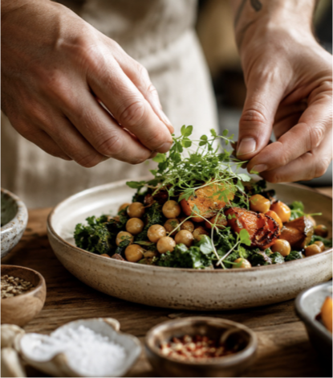

Observar
Rotina, horários, sintomas, energia e contexto.
Alimentação natural e funcional
A alimentação é tratada na Pura Tita como um caminho prático de transformação. O foco está em simplificar a rotina, criar boas bases e trazer mais leveza às escolhas do dia a dia.

Metodologia
Rotina, horários, sintomas, energia e contexto.
Alternativas práticas a glúten, lactose e açúcar processado.
Planos simples, listas base e estrutura para o dia a dia.
